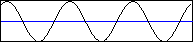

mFindMaxPoints
Поиск точек экстремума
Объявление функции
function mFindMaxPoints(Ws: TWorkspace; SourAr, DestAr: string;
Line: Real; FindMax: Boolean = True): Boolean;
Назначение
Процедура выполняет поиск точек экстремума в векторе-строке SourAr. Если FindMax=True, то ищутся точки, лежащие выше линии Line, а иначе - точки ниже этой линии. Точка считается точкой экстремума, если обе кривые, сходящиеся в этой точке, пересекают линию Line. В выходной вектор DestAr записываются координаты найденных точек. Ws - ссылка на рабочую область, в которой хранится входной массив.
Примеры
Пусть имеется массив A, хранящий участок синусойды. Он представлен на рисунке:

Выполним поиск точек экстремума, лежащих выше нуля:
mFindMaxPoints(Base, 'A', 'P', 0);
В результате получим массив P=[70 132 195 258].